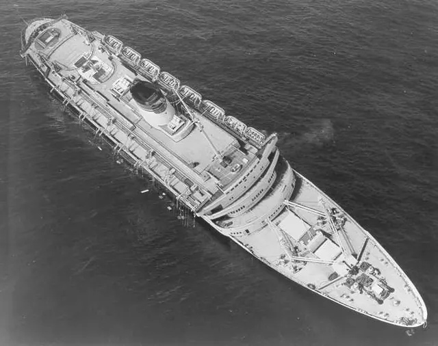

A9A12
Chapter 1: 鐵達尼點解改變世界
鐵達尼號沉沒之前，好多人以為「大船」本身就等於安全。佢有水密艙、有豪華設備、有最新 wireless，但去到北大西洋冰區，真正救命嘅唔係名氣，而係一條條好悶但好硬淨嘅 safety rule。船撞冰山之後，最大問題唔只係船身入水，而係救生艇數量、乘客集合、無線電守聽、夜間遇險信號，每一樣都唔夠系統化…
Chapters
鐵達尼號沉沒之前，好多人以為「大船」本身就等於安全。佢有水密艙、有豪華設備、有最新 wireless，但去到北大西洋冰區，真正救命嘅唔係名氣，而係一條條好悶但好硬淨嘅 safety rule。船撞冰山之後，最大問題唔只係船身入水，而係救生艇數量、乘客集合、無線電守聽、夜間遇險信號，每一樣都唔夠系統化…

1956 年 7 月 25 號夜晚，意大利郵輪 Andrea Doria 同瑞典客船 Stockholm 喺 Nantucket 對出大霧中相遇。據 Britannica 整理：兩船用 radar 互相探測到對方，但對相對航向、距離同 passing side 嘅判斷出錯；視線真正見到對方時已經太近…

Rudolf Diesel 唔係只係「柴油機」個名咁簡單。根據 Britannica 整理：佢 1858 年出世，1890 年代發展出壓縮點火引擎，1897 年成功示範高效率四衝程 compression ignition engine。到 1913 年 9 月，Diesel 由 Antwerp 登…

香港人睇海，好容易淨係諗「維港」。但你考 PVOC2，A7 講嘅香港水域其實係一個好複雜嘅交通系統：VTS sector、航道、機場進口航道區、避風塘、橋底高度限制，全部都係令唔同大小、速度、用途嘅船可以一齊用同一片水。…

1967 年 7 月 29 號，美國航母 USS Forrestal 飛行甲板上，一支 Zuni rocket 因電氣問題意外發射，擊中另一架機附近，引燃燃油同彈藥，爆炸同火勢迅速擴散。根據 US Navy NHHC 同 Britannica：呢場火造成重大傷亡，亦成為艦上消防、彈藥處理、熱工訓練嘅…

1937 年 5 月 6 號，德國飛船 Hindenburg 喺 New Jersey Lakehurst 準備降落時起火。根據公開資料，確切單一原因至今仍有爭議，但主流解釋係氫氣洩漏，加上靜電火花或放電，引發快速燃燒。最震撼嘅唔係「飛船危險」呢句，而係大型交通工具出事時，細小異常可以喺好短時間內變…

1909 年 1 月 23 號，White Star liner RMS Republic 喺美國東北對出大霧中，同意大利船 SS Florida 相撞。根據公開資料：Republic 受重創，無線電操作員 Jack Binns 維修受損設備，用電池供電發出 CQD distress call；Na…
有啲規則，只有當你去到外地先知幾重要。浮標顏色就係其中一種。公開資料顯示，IALA Maritime Buoyage System 將世界分成 Region A 同 Region B；香港跟 Region A，即係由海入港時，port-hand mark 用紅色，starboard-hand mar…

2021 年 3 月，Ever Given 喺 Suez Canal 擱淺，全球航運即刻塞車。綜合 BBC、Britannica 同航運分析指出，強風、狹窄水道、船身巨大、bank effect / shallow-water hydrodynamics，都令操控 margin 變得好細。你可能會諗…

Shackleton 嘅 Endurance 遠征（1914–1916）最出名係船被南極冰壓毀，但 28 人最後全部生還。公開資料顯示嘅重點係：佢哋及早搬物資、保留救生艇、維持紀律同士氣。呢種「未到最後一秒先諗辦法」正正係 A13 緊急應對想你學嘅：MOB、擱淺、火警、入水，第一步永遠係保人命、穩定…
香港 Marine Department 將 Pleasure Vessel Operator Certificate 分成 2 級（唔係 3 級，唔好聽人亂講）。根據 Examination Rules for Pleasure Vessel Operator Certificate of Com…